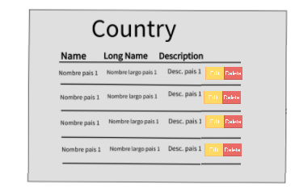

Form CRUD
A crud is an acronym of Create. Read. Update. Delete.
This is the continuation for country's form crud.
In this exercise we are going to proceed with the Update and the Delete.
Need to be carefull because you will have to create new code to complete the new functionality but now
you have existing code that needs to keep working.
After every change make sure everything is working as expected, if not reverse the changes.
Delete operation
- Modify the existing code to add two buttons on each row of the table, one in orange color for Edit and
one in red for Delete.
Make sure you modify the following parts:
- HTML: Modify the html to create one new columns in the header of the table. You can leave the column header blank if you want or name it "Actions"
- JAVASCRIPT: When you are loading the table, remember to add those two buttons in the DOM
modification. To make it easier, try to create the HTML in a different file and then try to fit
it into the javascript. Also create two functions to handle each operation, Delete and Update, The Update function will be coded later. Those functions need to be called from the buttons that you just created.
Hint: Remember to assign the unique id for each button and remember to send the row's specific id to it's onclick event to make the easy recognition in the next steps.
- Inside the Delete function, Identify the row index of the button that was clicked. (One possible way is using the parameter sent to the function and iterate the list to find its position inside the list, the way we did it in the
valition inside the create method.)
- Having the row index that was clicked go and delete the information in the javascript variable
which was used to draw the table.
To delete a element in arrays use: list.splice(index, howMany);
example: having a list called 'information' with 7 elements delete the element with index 4.
information.splice(4,1)
- Delete the row from the table by creating a selector with jquery to get the row clicked. (Remember that we created an specific id for every row of the table.)
- Show a toastr informing the results of the operation
